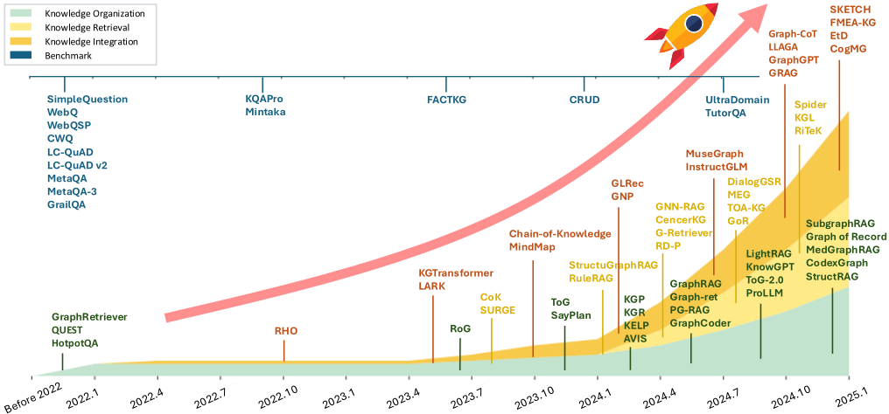
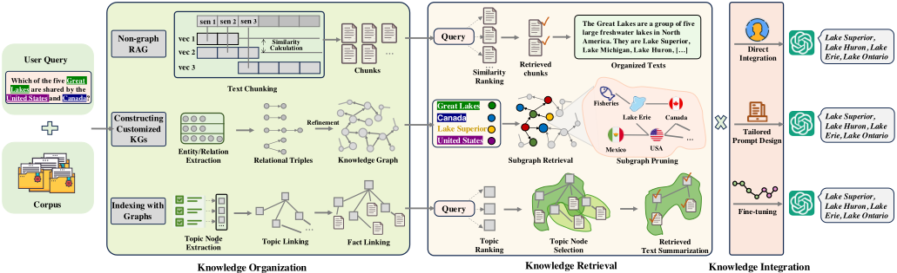
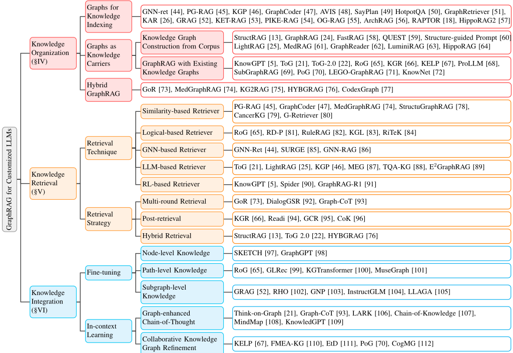
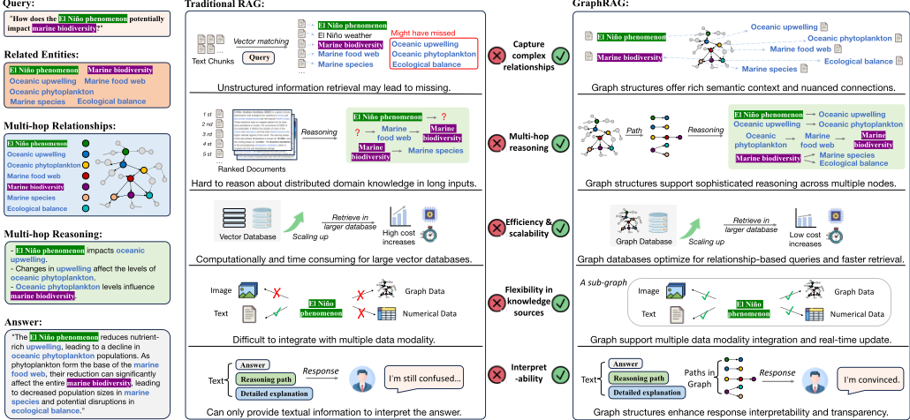

面向定制化大语言模型的图检索增强生成（GraphRAG）综述
该综述系统梳理了 GraphRAG（基于图的检索增强生成）这一新范式，针对传统平面文本检索 RAG 在专业领域的四大痛点：复杂查询理解不足、分布式领域知识整合困难、LLM 固定上下文窗口限制、以及大规模下的效率与可扩展性瓶颈。论文提出三分法分类体系——Knowledge-based（图作为知识载体）、Index-based（图作为索引工具）与 Hybrid GraphRAG，并沿知识组织、知识检索、知识整合三阶段剖析技术全景：检索涵盖语义相似、逻辑规则、GNN、LLM-based、RL-based 等六类技术，整合分为 fine-tuning 与 in-context learning 两条路线（含 Graph-enhanced CoT 与协同知识图谱修正）。核心结论是：通过图结构显式建模实体关系与层级，GraphRAG 在多跳推理、跨文档关联与全局性问题上优于传统 RAG，同时具备更好的可解释性。论文还整理了 Microsoft GraphRAG、LightRAG、Nano-GraphRAG、CodexGraph 等开源项目、基准数据集与跨领域案例，并指出知识质量、知识冲突、隐私与效率等开放挑战。对团队而言，这是 RAG 与上下文组织方向的系统性参考地图，可直接支撑知识库问答等场景的检索架构选型。
传统基于平面文本检索（chunk + 向量相似度）的 RAG 在将 LLM 定制到专业领域时存在四类根本局限：复杂查询理解不足（难以多跳推理）、领域知识分散在多源文档中导致整合困难、LLM 固定上下文窗口（2K-32K tokens）导致长程依赖丢失、以及大规模知识库下的检索效率与可扩展性瓶颈。论文旨在系统化梳理 GraphRAG 范式的分类体系、技术基础、开源实现与领域应用，为研究者和实践者提供部署指引。
提出 GraphRAG 三分类体系：(1) Knowledge-based GraphRAG——用 OIE/LLM 从语料构建显式知识图谱作为知识载体，或复用已有 KG 并用规划算法（如 ToG 的 beam search、RL）检索推理路径；(2) Index-based GraphRAG——保持原始文本，用图结构（相似度图、伪图、层级索引图）索引文本块；(3) Hybrid GraphRAG——图既承载知识又索引原文（如 MedGraphRAG 三元图、CodexGraph 代码符号图）。检索阶段包括查询/图预处理、匹配、知识剪枝三步；整合阶段分为 fine-tuning（节点级/路径级/子图级知识）与 in-context learning（Graph-enhanced CoT、基于 KG 的回答修正）两条路线，并综述多轮检索、post-retrieval、Graph+Vector 混合检索等增强策略。
未在论文中说明
相比已有 GraphRAG 综述（仅覆盖 Graph-based Indexing、Graph-guided Retrieval、Graph-enhanced Generation 的基础工作流描述），本文提出更精细的三分类 taxonomy（Knowledge-based / Index-based / Hybrid），采用从理论到实践的六节结构，新增开源项目详评（Microsoft GraphRAG、Nano-GraphRAG、LightRAG、Fast GraphRAG 等）、跨领域案例与基准数据集整理，并对知识质量、知识冲突、数据隐私、效率等挑战给出多维分析，强调面向生产环境的可操作指引。
相关度级别：high
命中能力域：3.1 上下文工程与记忆 | 3.2 提示工程 | 3.5 评测与可靠使用
理由：RAG/检索增强与结构化上下文组织是 3.1 域的核心技术，本综述完整覆盖了知识组织、检索、整合全链路，直接对应团队知识库问答与上下文管理的技术栈；论文中 Graph-enhanced CoT、prompt format choice、in-context learning 等内容命中 3.2；其对基准数据集的整理、幻觉缓解（KG-based Retrofitting、faithfulness 验证）、token 成本与计算开销分析则对应 3.5 的评测与可靠使用。作为综述它不提供单一可复制的算法，但为团队在检索架构选型、上下文压缩策略上提供了系统性的技术地图与开源项目索引。
建议动作：深入精读并做内部分享
arXiv:2501.13958v3 [cs.CL] 29 Sep 2025
1
∗ ∗ ∗
Qinggang Zhang, Shengyuan Chen, Yuanchen Bei, Zheng Yuan, Huachi Zhou, Zijin Hong, Hao Chen, Yilin Xiao, Chuang Zhou, Junnan Dong, Yi Chang, Xiao Huang
摘要 - 大语言模型（LLMs）已在广泛的任务中展现出卓越的能力，然而由于需要深厚的专业知识，其应用于专业领域仍然充满挑战。检索增强生成（RAG）已成为一种有前景的解决方案，它通过无缝集成外部知识库来为专业领域定制大语言模型，使其能够在推理过程中实时获取领域特定专业知识。尽管潜力可观，基于扁平文本检索的传统 RAG 系统面临三个关键挑战：（i）专业语境下的复杂查询理解，（ii）跨分布式知识源进行知识整合的困难，以及（iii）规模化场景下的系统效率瓶颈。本综述对基于图的检索增强生成（GraphRAG）进行了系统性分析，这是一种彻底变革领域特定 LLM 应用的全新范式。GraphRAG 通过三项关键创新克服了传统 RAG 的局限：（i）图结构化知识表示，显式捕获实体关系与领域层次结构；（ii）高效的基于图的检索技术，实现具备多跳推理能力、能保持上下文的知识检索；（iii）结构感知的知识整合算法，利用检索到的知识使 LLM 生成准确且逻辑连贯的内容。在本综述中，我们系统分析了 GraphRAG 的技术基础，考察了其在各类专业领域中的现有实现，并识别了关键技术挑战与有前景的研究方向。GraphRAG 的所有相关资源，包括研究论文、开源数据和项目，均已收集于 https://github.com/DEEP-PolyU/Awesome-GraphRAG 供社区使用。
索引术语 - 检索增强生成（Retrieval-Augmented Generation）、知识图谱（Knowledge Graphs）、基于图的检索增强生成（Graph-based Retrieval-Augmented Generation）
大型语言模型（Large Language Models, LLMs），如 GPT 系列 [1]，以其在广泛任务中的卓越能力令世界惊叹，在文本理解 [2]、问答 [3] 和内容生成 [4] 方面取得了突破。尽管效果显著，LLMs 在处理知识密集型任务方面的能力有限，尤其在面对需要领域专业知识的问题时，这一点一直受到批评 [5]。具体而言，将 LLMs 应用于专业领域仍然充满挑战，其根本原因包括以下三点：❶ 知识局限性：LLMs 的预训练知识虽然广泛，但在专业领域较为浅显。其训练数据主要由通用领域内容构成，导致在专业领域深度不足，并可能与当前领域特定标准和实践存在潜在的不一致。❷ 推理复杂性：专业领域需要遵循领域特定规则和约束进行精确的多步推理。LLMs 在较长的推理链中往往难以保持逻辑一致性和专业准确性，尤其是在处理技术约束或领域特定协议时。❸ 上下文敏感性：专业领域通常涉及依赖上下文的解释，相同的术语或概念可能因具体情境不同而具有不同的含义或引申义。LLMs 常常无法捕捉这些细微的上下文变化，从而导致潜在的误解或不恰当的泛化。
*作者对本研究的贡献相同。
Qinggang Zhang、Shengyuan Chen、Yuanchen Bei、Zheng Yuan、Huachi Zhou、Zijin Hong、Hao Chen、Yilin Xiao、Chuang Zhou、Junnan Dong 和 Xiao Huang 就职于中国香港特别行政区香港理工大学（e-mail: { qinggangg.zhang, yzheng.yuan, huachi.zhou, zijin.hong, yilin.xiao, chuang-qqzj.zhou, hanson.dong } @connect.polyu.hk, { iyuanchenbei, sundaychenhao } @gmail.com, { sheng-yuan.chen, xiao.huang } @polyu.edu.hk）。
Yi Chang 就职于中国长春吉林大学人工智能学院（e-mail: yichang@jlu.edu.cn）。
为了使 LLMs 适应特定或私有领域，最初的策略是使用专业数据集对 LLMs 进行微调 [6]。该方法通过在固定预训练阶段所学参数的同时添加少量参数来提升性能 [7]。然而，领域特定数据集与预训练语料库之间存在显著的分布差异，使得 LLMs 难以在不损害其已有理解的情况下整合新知识 [8]。Google Research 最近的一项研究进一步强调了使用有监督微调（supervised fine-tuning）更新知识的相关风险，尤其是在新知识与已有信息相冲突的情况下；通过有监督微调获取新知识可能导致模型产生新的幻觉，甚至出现严重的灾难性遗忘 [9]。
检索增强生成（Retrieval-Augmented Generation, RAG）为针对特定领域定制大语言模型（LLMs）提供了一种有前景的解决方案 [10], [11]。RAG 无需通过重新训练 LLMs 来纳入更新，而是利用来自文本语料库的外部知识来增强这些模型，且不修改其架构或参数。这种方法使 LLMs 在生成回复时，不仅能够利用其预训练知识，还能利用实时检索到的领域特定信息，从而提供更加准确可靠的答案。朴素的 RAG 系统通过三个关键步骤运行：知识准备、检索和整合。在知识准备阶段，外部文本语料库被划分为易于管理的文本块，并转换为向量表示以便高效索引。在检索阶段，当用户提交查询时，系统使用关键词匹配或向量相似度度量来搜索相关文本块。随后，整合阶段将这些检索到的文本块与原始查询相结合，以生成信息更充分的回复。近年来，一些先进的 RAG 系统已超越简单的文本块检索，提供了更为复杂的知识增强方法。其中包括通过多级检索保留文档结构的分层 RAG [12], [13]、实现两阶段检索以获得更高召回率和精确率的重排序系统 [14], [15]、自动分解复杂查询的自查询 RAG [16]，以及根据查询类型动态调整检索策略的自适应 RAG [17], [18]。这些策略通过提升上下文感知能力、检索精度以及处理复杂查询的能力，推动了朴素 RAG 系统的发展。

检索增强生成（RAG）的出现为利用领域特定知识定制大语言模型（LLM）提供了一种颇具前景的方法。然而，尽管潜力可观，RAG 仍面临若干关键局限，影响其在实际应用中的有效性。这些局限大致可归纳为四大主要挑战，它们显著影响着 RAG 增强的 LLM 的性能与实用性。首要挑战在于复杂查询理解。专业领域通常涉及复杂的术语和行业专用行话，需要精确解读 [19]。这些领域的用户查询通常包含大量技术术语和行业专用表达，其解答往往需要跨多个相关概念进行推理。传统 RAG 方法依赖简单的关键词匹配和向量相似度技术，难以捕捉准确与全面所必需的深层语义细微差别和多步推理过程 [20]。例如，当查询概念 A 与概念 D 之间的关联时，这类系统通常仅检索直接相关的信息，遗漏了能够衔接这一关系的 B、C 等关键中间概念。这种狭窄的检索范围限制了 RAG 实现广泛上下文理解和复杂推理的能力。
另一个关键挑战涉及整合来自分布式来源的领域知识。领域知识通常收集自不同来源，例如教科书、研究论文、行业报告、技术手册和维护日志。这些文本文档的质量、准确性和完整性参差不齐。检索到的知识往往扁平、庞杂而繁琐，而领域概念通常分散在多个文档之中，不同概念之间缺乏清晰的层次关系 [5], [21], [22]。尽管 RAG 系统试图通过将文档切分为更小的块来进行高效且有效的索引，以应对这种复杂性，但这种方法在无意中牺牲了关键的上下文信息，严重损害了检索准确性和上下文理解能力。这一局限阻碍了在相关知识点之间建立稳固联系的能力，导致理解碎片化，并降低了利用领域专业知识的效果。
第三个局限源于大语言模型（LLM）的固有约束。虽然 RAG 系统能够从庞大的知识库中检索相关信息，但 LLM 处理这些信息的能力受限于其固定的上下文窗口（通常为 2K-32K 个 token）[1], [23]。复杂文档中的长程依赖无法被完整捕获，因为超出上下文窗口的内容必须被截断或总结，这会破坏自然的语义单元和逻辑流程。在专业领域中，跨广泛知识上下文保持连贯性的挑战日益突出，因为关键信息可能在上下文窗口截断过程中丢失。这一根本性局限直接影响系统从大规模知识库中处理和综合全面信息的能力。
最后一个挑战与系统效率和可扩展性有关。整个 RAG 流水线——从最初的语料库预处理与索引构建，到实时检索与生成——面临显著的效率瓶颈 [24], [25]。外部知识库中包含大量与领域无关的信息，而领域专用术语往往稀疏地分布在这些文档之中。RAG 系统的计算开销可能很高且耗时 [24]，尤其是在处理大规模知识源时，因为模型需要在海量非结构化文本中进行搜索以找到相关信息。此外，实时检索和跨文档推理会引入相当大的延迟，对用户体验造成负面影响。随着知识库规模的增大，检索质量与准确率会不断下降，这进一步制约了 RAG 的可扩展性 [25]，从而限制了其在广泛且动态的环境中的实际部署。
3
为应对这些局限性，图检索增强生成（GraphRAG）近来作为一种新范式兴起，其通过组织良好的背景知识与增强的上下文推理能力来定制大语言模型（LLM）[24], [26]-[29]。根据对图结构的利用方式，现有的 GraphRAG 模型可归纳为三大类别：❶ 基于知识的 GraphRAG（Knowledge-based GraphRAG），将图用作知识载体；❷ 基于索引的 GraphRAG（Index-based GraphRAG），将图用作索引工具以从语料库中检索相关原始文本；❸ 混合式 GraphRAG（Hybrid GraphRAG），融合了基于知识与基于索引两种框架的优势，为复杂推理任务提供更先进的解决方案。基于知识的 GraphRAG 与基于索引的 GraphRAG 代表了利用结构化知识增强 LLM 的两种不同范式。基于知识的 GraphRAG 侧重于将非结构化的文本文档转化为显式且结构化的知识图谱（KG），其中节点表示领域概念，边刻画概念之间的语义关系，从而能够更好地表示层次关系和复杂的知识依赖。相比之下，基于索引的 GraphRAG 则保留原始文本形式，主要将图结构用作一种索引机制，以高效地组织和检索相关文本块。通过将图结构融入文本索引，基于索引的 GraphRAG 方法在文本块之间建立语义连接，以实现高效的查找操作与检索。基于知识的 GraphRAG 强调通过图转换对领域知识和语义关系进行显式建模，而基于索引的 GraphRAG 则优先考虑通过对原始文本进行基于图的组织来实现高效的信息检索与全局导航。这种方法上的根本差异反映了二者不同的目标：基于知识的 GraphRAG 旨在构建结构化的知识表示，借助基于图的推理能力更好地理解复杂关系；而基于索引的 GraphRAG 则专注于通过基于图的索引策略来优化相关文本信息的检索与可访问性。
在本综述中，我们系统性地分析了 GraphRAG 的技术基础，并考察了其在各个专业领域中的现有实现，识别出关键的技术挑战与有前景的研究方向。GraphRAG 的所有相关资源，包括研究论文、开源数据和项目，均已收集于 https://github.com/DEEP-PolyU/Awesome-GraphRAG 供社区使用。
本综述对 GraphRAG 进行了全面分析，详细阐述了其分类体系、机制、挑战与未来研究方向，全文共分为七个主要章节，从基础概念逐步推进到实际实现。具体而言，我们在第 III 节中首先建立基础框架，追溯 GraphRAG 从传统 RAG 系统的演进历程，考察 RAG 在处理结构化知识方面的局限性，并介绍 GraphRAG 的核心概念及其在复杂推理任务中的优势。随后三章系统性地探讨 GraphRAG 系统的关键组成部分：用于结构化知识组织的两种主要范式，包括知识载体图（knowledge carrier graph）与索引图（index graph）（第 IV 节）；用于从结构化知识库中提取与查询相关的事实信息的检索技术（第 V 节）；以及用于将检索到的知识有效融入大语言模型（LLM）的知识整合方法（第 VI 节）。在迈向实际应用方面，第 A 节（见附录）通过回顾不同领域的开源项目与基准测试（benchmark）数据集，探讨 GraphRAG 系统在真实世界中的实现。最后，第 B 节和第 C 节（见附录）作为总结，指明未来研究方向，并讨论在知识质量、检索效率、系统泛化能力与安全性方面的潜在挑战。在整个综述中，我们兼顾基础概念、当前最先进的方法与实际实现，使其对推动该领域发展的研究人员以及在真实场景中开发 GraphRAG 应用的从业者都具有参考价值。
我们的综述通过对现有 GraphRAG 系统进行更系统、更全面的回顾，超越了现有综述 [27], [29], [30]。先前的综述仅提供了涵盖基于图的索引（Graph-based Indexing）、图引导检索（Graph-guided Retrieval）和图增强生成（Graph-enhanced Generation）的基本工作流程描述，而我们引入了更精细、更全面的分类体系，将 GraphRAG 方法清晰地划分为三个不同的类别（基于知识的 GraphRAG、基于索引的 GraphRAG 和混合式 GraphRAG），从而对该领域提供了更细致的理解。我们的综述采用了更系统的六部分结构，从理论基础到实际实现循序渐进地展开，对每个组成部分（包括知识组织范式、检索技术和集成方法）进行了更详细的探讨。与先前的综述不同，我们通过对开源项目的详细回顾，以及由覆盖不同领域的全面数据集所支撑的领域特定案例研究，提供了大量实用指导。我们还在多个维度上对挑战与解决方案进行了更透彻的分析，包括知识质量、检索效率、系统泛化能力和安全性问题。最后，虽然现有综述宽泛地讨论了潜在应用，但我们提供了由全面分析和实现示例所支撑的可操作见解，使我们的综述成为从业者在生产环境中部署 GraphRAG 系统的更有价值的资源。
本节概述了基于大语言模型（LLM）的检索增强生成（RAG），包括传统的 RAG 流程、GraphRAG，以及 GraphRAG 相较于传统 RAG 系统所具备的优势。
RAG 框架首先根据查询从预先构建的外部知识库中检索相关信息。随后，这些信息被用于提示 LLM，引导其构建可信的推理链。由此，RAG 使 LLM 能够生成更有依据、更准确的内容，有效减少幻觉与不一致性。传统的 RAG 流程通常包含三个核心组件：知识组织、知识检索和知识整合。我们在附录 D 中对传统 RAG 系统进行了详细分析。
4

1) 知识组织：在传统 RAG 系统中，知识组织是指对外部知识库进行结构化和准备，以便在给定查询时实现快速且相关的检索。一种常见策略是将大规模文本语料库切分为便于管理的文本块（chunk）。随后，这些文本块通过嵌入模型（embedding model）被转换为嵌入向量（embedding），嵌入向量在向量数据库中充当原始文本块的键（key）[31]-[33]。这种设置使得系统能够执行高效的查找操作，并通过在语义空间中进行基于距离的搜索来检索相关内容。
作为检索前流程中的关键步骤，已有若干方法 [34], [35] 被提出用于优化知识组织，其重点关注两个主要方面：粒度优化和索引优化。粒度优化旨在平衡相关性与效率：粗粒度单元能够提供更丰富的上下文，但存在冗余和干扰的风险；而细粒度单元可能缺乏语义完整性，并增加检索负担 [36], [37]。为了控制粒度，人们采用分块（chunking）策略，基于 token 限制将文档切分为文本块。递归切分（recursive splits）、滑动窗口（sliding window）以及 Small-to-Big [35], [38] 等方法力求在优化上下文长度的同时保持语义完整性。索引优化则致力于改进待检索内容的结构和质量。元数据添加（metadata-addition）技术为文本块文本附加标题、时间戳、类别和关键词等元数据，从而支持在检索后流程中执行过滤和重排序操作 [35]。另一类技术是层次化索引（hierarchical indexing），它将文件组织为父子关系并在每个节点上保存摘要，从而实现更快、更高效的数据遍历，同时减少检索错误 [39]。这类树状索引方法代表了结构化知识组织的早期尝试，并启发了后续工作利用图结构的力量进行知识组织，即 GraphRAG。
总而言之，知识组织是检索过程的基础。通过精心构建知识资源，RAG 系统能够提升检索效率，并确保所检索内容的忠实性与可靠性。
2) 知识检索：知识检索阶段涵盖多种方法与策略，旨在高效地访问并从预先组织的知识库中检索所需知识，确保选出能够提升生成输出质量的相关信息。
当前的 RAG 系统通常采用 K 近邻检索（KNN）、词频-逆文档频率（TF-IDF）以及最佳匹配 25（BM25）等检索方法来获取相关内容。RETRO [31] 通过计算 L2 距离，利用 KNN 从所构建的键值数据库中提取近似的相关邻居。RETROprompt [40] 通过少样本（few-shot）知识库对这一方法进行了扩展，使其适配更高级的提示。
此外，在应用检索方法之前，还会采用一些专门技术来提升检索的准确性与效率。为了捕捉查询的多方面特征，GAR [41] 引入了多样化上下文生成，在应用 BM25 检索之前用额外的上下文来丰富初始查询。EAR [42] 对这一框架进行了增强，实现了重排序（re-ranking）过程，从多个扩展查询中选出最优候选，以提高检索准确率。此外，针对 BM25 等精确检索方法所带来的计算挑战，Doostmohammadi 等人 [43] 提出了一种混合方法：先使用 sentence transformers 进行表示以识别近似邻居，再应用 BM25 进行重排序，从而在大规模检索任务上有效平衡了准确性与计算效率。
总体而言，知识检索将创新方法与多样化的数据获取策略相结合，为生成信息丰富且与上下文相关的输出奠定了基础。
5

3) 知识融合：RAG 框架中的知识融合阶段对于综合检索所得知识与模型固有知识、从而生成连贯且准确的响应至关重要。在这一阶段，研究人员利用 LLM 生成输出，并采用多种预处理与效率策略来提升其质量和效率。
检索内容的质量会极大地影响生成结果，无关或具有误导性的数据可能带来有害影响。LeanContext [113] 通过利用强化学习来选择性地挑选与查询最相关的句子，从而有效缩小上下文规模并降低计算成本，解决了这一问题。类似地，SELF-RAG [16] 引入了一种自我反思机制，由语言模型评估其自身生成的内容和检索到的内容，从而能够在生成过程中实施纠正措施。SKR [114] 提出了一种动态框架，使 LLM 能够在已识别的查询上依赖其预训练知识，仅在必要时才诉诸检索。FILCO [115] 在此基础上进行了改进，通过训练一个上下文过滤模型来筛选掉无关数据，从而降低幻觉风险。Lyu 等人 [116] 的最新研究提出了一种专门用于评估检索内容重要性的评估方法。他们的研究结果表明，通过对检索语料库的部分内容进行剪枝或重新加权，RAG 系统无需额外的训练轮次即可提升性能。在检索语料库受限的场景中，Selfmem [117] 等方法利用 LLM 生成的结果构建记忆池，并采用迭代选择框架来提升生成质量。SAIL [118] 基于检索结果构建指令微调数据集，对 LLM 进行微调，使其回答立足于可靠内容，同时排除干扰性元素。
总而言之，RAG 中的生成阶段侧重于提升 LLM 驱动的内容生成的质量和效率。这些方法不断演进，以最大限度地发挥 LLM 在为 RAG 生成具备上下文感知能力、准确且高效的回答方面的潜力。
尽管研究人员已经对传统 RAG 进行了广泛探索，但由于数据结构本身的限制，仍然存在一些尚未解决的局限性。
1) 复杂查询理解：传统 RAG 在精确回答复杂查询方面面临重大挑战，这主要源于其知识组织方式（向量数据库）的内在局限。给定一个查询，这些 RAG 方法仅检索语义相似的文本块（chunk），而文本块内部的局部上下文信息可能不足以回答多跳（multi-hop）问题。随着文本块粒度的减小，这一局限性变得更加明显，使得处理领域知识变得困难，因为领域知识通常需要多跳推理才能有效理解。一些传统 RAG 方法曾尝试改进复杂查询理解，例如在检索前对查询进行增强 [41]、对多个查询候选进行增强以用于重排序 [42]，以及利用相关元数据提供更丰富的信息 [35]。然而，这些方法仍然受限于基于文本块的知识组织方式，难以有效捕获复杂查询中的多跳信息。
6
2) 分布式领域知识：特定领域的查询通常涉及需要结合上下文才能理解的专业术语。然而，领域知识通常稀疏地分布在各种文档和数据源中。尽管 RAG 使用分块（chunking）技术将文档划分为更小的片段，以管理这种复杂性并提高索引效率，但这牺牲了关键的上下文信息，显著降低了检索准确性和上下文理解能力。此外，向量数据库在存储文本块时缺乏对模糊或抽象概念的层次化组织，因此难以解决此类查询，降低了利用特定领域专业知识的效率。当前一些传统 RAG 工作持续将检索内容与实时生成状态对齐 [119]，并引入外部 API 以提供动态且丰富的辅助信息 [120]。虽然这些方法增强了 RAG 对分散领域知识的理解，但它们仍然依赖传统的分块方法进行知识组织，无法完全解决分布式领域知识的问题。这一局限性限制了它们在知识片段之间构建稳健连接的能力。
3) LLM 的固有约束：传统 RAG 通常采用基于向量相似度的检索模块，该模块往往缺乏对从海量知识库中检索到的内容的有效过滤，从而提供过多但可能不必要的信息。考虑到 LLM 的固有约束，例如固定的上下文窗口（通常为 2K-32K 个 token）[1]、[23] 以及在复杂文档中充分捕获长程依赖的挑战，传统 RAG 中的 LLM 难以从过多的检索内容中捕获必要信息。虽然增大分块（chunk）粒度可以缓解这些挑战，但这种方法会显著增加计算成本和响应延迟。此外，基于索引的方法无法在检索过程中有效剪除无关信息，导致目标知识被淹没。这些局限给在资源受限环境中部署 RAG 带来了实际挑战，因为在这类环境中更倾向于使用输入上下文窗口较小的 LLM。现有的传统 RAG 方法已提出诸如递归分割、滑动窗口和 Small-to-Big [35]、[38] 等方法，在保持语义完整性的同时优化上下文长度。它们还对检索到的信息进行评估和过滤以提取关键见解 [16]、[113]、[115]、[116]，并对 LLM 进行微调以增强其从海量检索数据中捕获关键信息的能力 [118]。这些方法有效减少了检索内容的数量，有助于应对 LLM 有限的上下文窗口，但仍不足以捕获长距离依赖。这一缺陷源于基于向量相似度的检索难以在不同检索内容之间建立足够清晰的关联，从而限制了 LLM 对长距离依赖的理解。
4) 效率与可扩展性：由于大规模知识源通常包含大量非领域特定信息，而领域特定术语往往稀疏地分布在各类知识载体中，RAG 系统的检索模块通常需要在海量非结构化文本中进行搜索以找到相关信息，这需要相当多的计算资源和时间 [24]。尽管现有的传统 RAG 方法提出在采用检索方法之前进行预处理以降低成本 [43]、[121]、[122]，或使用创新的并行化方案在中间过程中提取并维护关键信息以优化资源利用 [15]、[123]、[124]，但它们仍不可避免地需要从大量非结构化文本中检索信息。这使得资源消耗成为传统 RAG 持续存在的问题，影响了其可扩展性。
为了解决传统 RAG 的局限性，一种被称为图检索增强生成（Graph Retrieval-Augmented Generation, GraphRAG）的新范式应运而生。GraphRAG 利用结构化知识，提供了一种借助结构化数据库来组织和检索信息的高效且准确的解决方案，从而提升了 RAG 系统的性能和可靠性。
1) GraphRAG 的定义：GraphRAG 可以被正式定义为 RAG 框架的一个子类，它利用图结构来组织和检索知识。与传统 RAG 方法依赖向量数据库进行知识组织不同，GraphRAG 采用结构化数据库，其中图被用来建模知识片段之间的依赖关系。这种方法提高了信息检索的准确性和效率，使 LLM 的增强生成更加有效。具体而言，GraphRAG 系统既可以将图用作知识的载体，也可以将其用作从分块文本数据中进行高效检索的索引工具。通过对节点之间的依赖关系进行建模，GraphRAG 能够发现以某个主题或锚点实体为中心的相关知识，从而确保知识的全面检索。此外，这些连接通过在检索过程中沿相关路径导航并同时剪除无关信息，支持高效的搜索。
2) GraphRAG 的工作流程：与传统 RAG 类似，GraphRAG 的工作流程可以分为三个关键阶段：知识组织、知识检索和知识整合。然而，由于 GraphRAG 的结构化特性，与传统 RAG 相比，它们具有一些特殊的策略：知识组织。知识组织阶段使用基于图的方法对外部信息进行结构化处理，或者通过显式知识表示（图作为知识载体），或者通过索引机制（图用于知识索引）。
知识检索。GraphRAG 采用基于图的检索器，根据输入查询检索相关信息。该检索器不仅考虑查询与每个文本块之间的语义相似性，还考虑查询类型与所检索子图之间的逻辑一致性。知识整合。一旦检索到相关知识，GraphRAG 模型便将其与输入查询整合以生成最终输出。整合过程的目标是将检索到的知识无缝融入生成的文本中，从而提升其质量和信息量。一个关键的设计考量是如何在最终的基于文本的提示中保留所检索子图信息的丰富性，同时不引入冗余，也不将重点错误地置于上下文中不太关键的方面。
7

与传统 RAG 系统相比，GraphRAG 具有多项关键优势，增强了 AI 驱动的信息检索与生成能力。下面我们将讨论这些优势，并在图 4 中总结其要点。
2) 知识来源的灵活性：GraphRAG 系统能够适应并整合多种知识来源，包括结构化数据库、半结构化数据（如 JSON 或 XML）以及非结构化文本。这种通用性使组织能够在受益于 GraphRAG 先进能力的同时，充分利用其现有的数据基础设施。该系统能够连接不同数据类型，提供对组织知识的统一视图。GraphRAG 可以将不同类型的数据（文本、图像、数值数据）纳入单一的图结构中。这一能力支持更全面的知识表示，并使系统能够回答跨越多种数据模态的查询。
4) 可解释性：GraphRAG 中的图结构能够更好地可视化和理解系统是如何得出其响应的。用户可以在知识图谱中追踪推理路径，查看在构建答案时考虑了哪些实体和关系。这种透明度对于建立对 AI 系统的信任至关重要，在医疗、金融或法律等决策过程需要可审计的应用领域中尤为宝贵。
总而言之，GraphRAG 相较于传统 RAG 系统是一项重大进步，提供了更出色的知识表示、推理能力和效率。其捕获并利用数据中复杂关系的能力，使其成为需要深度理解与上下文感知的下一代 AI 应用的强大工具。
8
GraphRAG 技术与传统 RAG 方法的一个主要区别在于，前者能够利用图结构实现高效的知识组织，从而提升查询响应的有效性。在这种设置中，LLM 充当智能体（agent），而图结构则支持其更全面、更精确地组织和整合信息的能力。在实际应用中，外部知识源可能包括海量文本语料库、文档集合、搜索结果、历史用户数据或交互日志。妥善组织这些知识源至关重要，因为直接检索容易产生无关结果和上下文缺失，进而导致信息过载、知识冲突以及理解能力受损。
为解决这一问题，GraphRAG 方法采用两步流程：首先构建图结构以组织知识，然后检索并整合与查询相关的信息。知识的组织方式因任务和数据源类型而异，主要有三种范式：(1) 用于基于索引的 graphRAG 的知识索引图（Graphs for Knowledge Indexing）：将每个文本块符号化为图中的一个节点，以此组织文本块，节点之间的边表示面向查询的关系，从而更易于定位相关知识。考虑到知识的层次性，进一步的研究构建了多级索引图，涉及自底向上的知识摘要和自顶向下的知识定位，以实现由粗到细的知识索引。(2) 用于基于知识的 graphRAG 的知识载体图（Graphs as Knowledge Carrier）：在此范式中，从文本块中提取摘要知识（例如原子事实、社区摘要），并将其整合到统一的知识库中，作为从原始语料中凝练出的核心知识的载体。(3) 混合 GraphRAG（Hybrid GraphRAG）：该方法结合了索引图与知识载体两种功能，既受益于知识图谱的逻辑推理能力，又通过索引保留了原始文本块中的详细信息。后续章节将逐一详细介绍这些范式，说明每种类型的图结构如何在多样化场景中实现高效且有效的检索。
基于索引的 GraphRAG 方法利用图结构来索引并检索相关的原始文本块，随后将这些文本块输入 LLM，以实现知识注入和上下文理解。这类索引图运用语义相似性或领域特定关系等原则，有效地在不同文本段落之间建立连接。与仅将图用作知识载体相比，该技术通过直接总结与查询相关的原始文本块中的信息，能够提供信息更丰富的答案。
这些图在构建与维护方面固有的挑战引出了若干研究问题，进而催生了若干塑造当前研究方向的研究问题：(1) 简洁性与相关性（Conciseness and Relevance）：确保所构建的图仅捕获相关关系、不因不必要的连接而过载，是一项重大挑战，从而有助于在无冗余的情况下有效召回相关文本块；(2) 一致性与冲突解决（Consistency and Conflict Resolution）：不同的数据块可能引入相互冲突的信息。解决这些冲突并确保图保持一致、可靠且结构良好至关重要。研究人员正在积极探索定制的索引图结构，以有效应对这些挑战。
在通用段落索引方面，GNN-ret [44] 构建了一个段落级图，通过结构相似性和关键词相似性将各段落连接起来。PG-RAG [45] 将 LLM 视为学习者，通过共同主题或互补事实将简明的阅读材料摘要链接起来形成伪图，从而生成一个相互连接的伪图数据库。KGP [46] 考察了三大类问题之间的逻辑关联，并提出了三种构建基于相似性的索引图的方法。第一种方法使用 TF-IDF 创建基于词汇相似性的索引图。第二种采用 KNN-ST/MDR [50] 构建基于语义相似性的索引图。第三种利用 TAGME [51] 构建基于共享实体的索引图。
许多方法专注于面向特定领域的索引图构建。在代码补全任务中，GraphCoder [47] 利用代码上下文图（CCG）来捕获代码语句之间的控制流与数据依赖关系，从而辅助检索相关代码片段以完成补全。AVIS [48] 基于用户决策、状态映射和允许的操作生成转移图。在机器人任务规划方面，SayPlan [49] 采用 3D 场景图表示，使 LLM 能够为规划目的执行语义搜索。这些专门化的方法对索引图加以定制，以满足各类领域特定任务的独特需求。
总结而言，基于索引图的方法经历了从通用的段落与实体检索策略，到用于连贯信息组织的复杂伪图（pseudo-graph），再到面向特定领域应用的高度专业化图结构的演进。每一次发展都应对了独特的挑战：从组织大规模文本语料与上下文摘要，到利用归纳偏置（inductive bias）来增强代码补全、决策制定与机器人规划等特定领域任务。这一演进过程凸显了基于图的结构在满足跨多个领域的 LLM 驱动应用日益多样化且不断增长的需求方面的适应性。
推理路径的检索通常包括生成以知识图谱（KG）为基础的关系路径作为计划，随后利用这些计划以推理链（即带有锚定实体的关系路径）的形式从知识图谱中提取事实知识。ProLLM [68] 将基于图的 RAG 应用于蛋白质-蛋白质相互作用的预测，把信号通路建模为推理过程，其中生物信号经由最短路径从上游蛋白质通过中间蛋白质传递至下游蛋白质。RoG [65] 和 KGR [66] 等方法直接利用 LLM 作为规划 Agent 来识别最优计划。为解决由知识图谱不完整性导致的推理路径召回率低的问题，ToG [21] 采用束搜索（beam search）算法动态探索最可能的关系三元组，从而形成连贯的推理链。其后续工作 ToG2 [22] 支持从知识图谱与文本文档中进行联合检索，其做法是在知识图谱上执行逻辑链扩展（探索当前实体的相邻实体）与从检索到的相关文档中进行上下文知识扩展之间交替进行。在生物医学领域，KG-RAG [142] 专注于检索准确且可信的生物医学上下文，它通过疾病实体识别、上下文剪枝以及利用生物医学知识图谱 [138] 等技术来优化检索过程。为优化规划过程，KnowGPT [5] 将计划的探索形式化为一个规划问题，并使用深度强化学习对其进行求解。与此同时，KELP [67] 采用了一种更为简单的语义匹配策略，利用一个在潜在语义空间上微调的编码器对问题与候选知识路径进行编码，并选择语义距离最小的知识路径。为了在推理链检索中平衡精确率与召回率，subgraphRAG [69] 引入了一个轻量级多层感知机来提取子图，从而发现知识图谱中的关键事实。该方法允许对子图规模进行调整，实现了效率与效果之间的权衡。有关检索技术的更多细节将在第 V 节中介绍。
10
| Catagory. | GraphRAG Model. | Input.Query Side | Input.Graph Side | Implementation Details.Query/Graph Preprocess | Implementation Details.Matching | Implementation Details.Pruning method | Output. |
|---|---|---|---|---|---|---|---|
| Similarity-based | StruGraphRAG [78] CancerKG [79] G-Retriever [80] PG-RAG [45] GraphCoder [47] MedGraphRAG [74] | query embedding keywords query embedding query embedding query slice query | entity embedding entity entity/relation embedding Pseudo-Graph CCG node entity description | BERT/BERT NA/NA SentenceBert/SentenceBert SentenceBert/SentenceBert CodeBERT/CodeBERT SentenceBert/SentenceBert | similarity calculation TF-IDF k-nearest neighbors depth-first search Jaccard index top-down search | ✗ ✗ PCST PGR subgraph edit distance bottom-up refine | literal context tabluar results subgraph literal context, path code snippet triple |
| Techniques Logical-based | RoG [65] RD-P [81] RuleRAG [82] KGL [83] RiTeK [84] | query embedding query embedding query embedding query embedding query embedding | relation path topic entity rule bank clarification path triple graph | Llama2/path generation RoBERTa/RoBERTa Llama2/rule mining Roberta/path generation SentenceBERT/SentenceBERT | breadth-first search path expansion similarity calculation similarity calculation MCTS/R-MCTS | LLM agent path discriminator ✗ ✗ LLM agent | reasoning path reasoning path literal context, path literal context reasoning path |
| Retrieval GNN-based | GNN-Ret [44] SURGE [85] GNN-RAG [86] | subquestions query embedding query embedding | graph feature triple embedding graph feature | SentenceBERT/RGNN T5-small/GNN NA/GNN | DPR similarity calculation similarity calculation | ✗ DHT ✗ | subgraph triple literal context |
| LLM-based | KGP [46] Graph RAG [24] ToG [21] LightRAG [25] MEG [87] TQA-KG [88] | query embedding query query embedding keywords query embedding keyword | passage (node description) community summary relation path entity, global keys graph feature triple | T5/T5 ✗ /community detection Llama2/relation exploration GPT-4o/GPT-4o SapBERT/SapBERT entity extract/ ✗ | TF-IDF LLM agent beam search keyword-search token generation keyword-search | LLM agent ✗ LLM agent global keyword match disambiguation LLM agent | literal context literal context reasoning path literal context literal context subgraph |
| RL-based | KnowGPT [5] Spider [90] | query embedding query embedding | entity/relation embedding entity embedding | BERT NA | similarity calculation similarity calculation | RL agent RL agent | reasoning path subgraph |
| Strategy Multi-round | DialogGSR [92] Graph-CoT [93] GoR [73] | query embedding query embedding query embedding | linearized graph entity embedding entity embedding | T5/T5 Llama2/Llama2 Mixtral-7B/GAT | subgraph generation similarity calculation similarity calculation | ✗ LLM agent ✗ | linearized subgraph subgraph literal context |
| Retrieval Post-retrieval | CoK [96] KGR [66] | pseudo evidence claim | triple entity, triple | NA/NA claim extraction/NA | F2-Verification claim verification | ✗ ✗ | final answer final answer |
| Hybrid Retrieval | StructRAG [13] ToG 2.0 [22] | query embedding keyword | entity embedding entity, relation | Qwen2/Qwen2 keyword extract/NA | similarity calculation similarity calculation | LLM agent entity/relation prune | literal context literal context, path |
| Catagory. | GraphRAG Model. | Input.Query Side | Input.Graph Side | Implementation Details.Query/Graph Preprocess | Implementation Details.Matching | Implementation Details.Pruning method | Output. |
3) 局限性：尽管将图用作知识载体既高效又有效，但这些方法在若干方面存在局限：( i ) 缺乏高质量的知识图谱（KG）。对于直接将知识图谱用作外部知识库的研究路线而言，其受到高质量知识图谱可获得性的制约。构建知识图谱非常耗费资源，尽管目前已开发出强大的知识图谱精化技术 [143]-[148] 来提升知识图谱的完整性，但大多数公开可用的知识图谱仍远不够全面。此外，统一本体的缺失也为设计可迁移的规划算法带来了挑战。这些局限促使近期研究聚焦于从语料库构建知识图谱。然而，这一研究方向又引入了额外的挑战：( ii ) 效率与效果之间的权衡。在从文本语料库构建知识图谱时，所抽取知识的粒度对于平衡效率与效果起着至关重要的作用。保留细粒度信息会导致知识图谱规模更大，从而可能阻碍计算效率；相反，紧凑的知识图谱可能牺牲重要细节，导致潜在的信息丢失。这种权衡使知识摘要过程变得复杂。此外，诸如 GraphRAG [24] 这类利用 LLM 进行知识摘要的方法，存在 token 成本高昂以及难以承受的高运行时开销的问题。
这一范式将图结构同时用作知识的载体和索引工具。一种常见做法是构建一个图来封装原始文本中的关键信息，并将每个节点与相应的文本块相关联。这些文本块作为补充性知识来源，提供详细的上下文信息。
为了增强长上下文摘要能力，GoR [73] 通过为文本块及其 LLM 针对模拟查询生成的响应创建节点来构建图，并用边将查询、检索到的文本块和响应连接起来。这种结构通过查询指定的索引捕获各元素之间复杂的关联，为有效的长上下文全局摘要提供了全面的表示。在医疗领域，MedGraphRAG [74] 引入了一种独特的三元图构建方法。该方法利用医疗领域关系，创建了一种将用户文档与可信医疗来源和受控词表相连接的三元链接结构。这有助于在处理私人医疗数据时，生成具有更高安全性和可靠性的循证医学回答。为了增强仓库级代码任务，CodexGraph [77] 使用静态分析构建代码图，通过表示关系的边（如 CONTAINS、INHERITS、USES）将源代码符号（如 MODULE、CLASS、FUNCTION）连接起来。该图通过隐含代码的工作流或数据流而充当知识载体，并作为与每个节点关联的元数据（源代码片段）的索引。
在基于图的组织策略构建好知识库之后，我们需要从知识库中进行检索。具体而言，给定一个用户查询和一个信息密集的图知识库，从知识库中检索与给定查询相关的事实信息，对于开发有效且高效的 GraphRAG 系统而言至关重要。这一检索过程构成了健壮的 GraphRAG 架构的基石，直接影响其整体性能与实用性。在本节中，我们将详细介绍面向基于图的检索增强生成的现有知识检索方法。
11
GraphRAG 中的知识检索过程侧重于从图数据库中提取与给定查询相关的背景知识。该过程遵循三个界限分明、依次执行的步骤，将原始图数据转化为可用的上下文知识。
1) 查询/图预处理：预处理阶段同时对查询和图数据库进行操作，为高效检索做好准备。在查询预处理方面，系统通过向量化或关键术语提取将输入问题转换为结构化表示 [47]、[78]、[79]。这些表示充当后续检索操作的搜索索引。在图这一侧，图数据库则经历更为全面的处理：预训练语言模型将图元素（实体、关系和三元组）转换为稠密向量表示，作为检索锚点 [22]、[46]、[80]、[88]。此外，一些先进的检索模型在图数据库上应用图神经网络（GNNs）来提取高层结构特征，而少数方法甚至采用规则挖掘算法生成规则库，作为图知识内容丰富且可搜索的索引 [21]、[44]、[82]、[85]。
2) 匹配：匹配阶段在预处理后的查询与已建立索引的图数据库之间建立连接。该过程将查询表示与图索引进行比对，以识别相关的知识片段。匹配算法同时考虑语义相似度和图内部的结构关系。系统根据匹配得分检索出与查询高度相关的连通分量和子图，从而构建初始的候选知识集合。
3) 知识剪枝：剪枝阶段对初步检索到的知识进行精炼，以提升其质量和相关性。这一精炼过程旨在应对检索结果过多或包含无关信息这一常见挑战，尤其是在处理复杂查询或大型图数据库时。剪枝算法应用一系列精炼操作来整合并汇总检索到的知识 [5]、[45]、[80]。具体而言，系统首先去除明显无关或含噪声的信息；随后整合相关的知识片段，并为复杂的图知识生成简洁的摘要。知识摘要的目的在于促进全面的知识综合，这对大语言模型（LLMs）的生成过程至关重要。通过提供经过提炼且重点突出的摘要，我们使 LLMs 能够更好地理解信息的上下文及其细微差别，从而生成更准确、更有意义的回答。
本小节全面概述了 GraphRAG 知识库中采用的各种检索技术。这些技术可大致分为六大类，包括字符串匹配、语义相似性、逻辑推理、基于 LLM 的方法、基于强化学习（RL）的方法以及基于图神经网络（GNN）的模型，如表 I 所示。
1) 基于语义相似性的检索器：基于语义相似性的检索器主要通过在离散语言空间或连续向量空间中度量查询与知识库之间的相似性，来执行合适的答案检索 [45], [47], [78]-[80]。(i) 离散空间建模。离散空间建模方法主要利用语言的离散统计知识来直接对文本字符串建模，这是一类简单直接的检索技术，依赖于查询词与图库中实体和关系的精确匹配。它采用子串匹配、正则表达式和精确短语匹配等算法来识别相关的节点和边 [22], [34], [79], [88]。尽管实现简单，字符串匹配的局限在于无法处理术语变化、同义词以及上下文细微差别。尽管存在这些局限，它仍作为一种基础性方法，在词汇定义明确、歧义极少的领域中尤为有用。(ii) 嵌入空间建模。嵌入空间建模技术用于评估查询与图库元素之间的上下文和概念联系，以突破字符串匹配的限制 [45], [47], [78], [80]。这些方法利用预训练语言模型和词嵌入等方法，例如 TF-IDF、Word2Vec 和 GloVe [149], [150]，来捕捉将不同组件联系在一起的语义纽带。通过将查询和图实体都映射到连续向量空间中，这些先进的技术能够检索语义相关的信息，即使在缺乏精确词项匹配的情况下也能弥合差距。然而，基于语义相似性的模型的局限在于它们忽视了对图结构的充分利用，导致图库的固有优势被严重低估而未得到充分发掘。
2) 基于逻辑推理的检索器：基于逻辑规则的检索采用符号推理从图知识库中推断并提取相关信息。该方法论涵盖构建逻辑规则和约束，以阐明知识库中固有的关系与层次结构。通过利用规则挖掘 [82]、归纳逻辑编程 [151] 和约束满足 [65] 等技术，该方法能够揭示数据中可能未明确呈现的洞见。借助这些逻辑推断，GraphRAG 系统能够检索与图库底层结构和语义相一致的信息。
3) 基于 GNN 的检索器：图神经网络（Graph Neural Networks, GNNs）已成为图建模与图挖掘的主流工具，在节点分类 [152]-[155] 和链接预测 [156]-[158] 等任务中取得了显著成果。GNNs 中的消息传递机制通过迭代地聚合节点邻居的信息来更新节点自身的表示，使网络能够从图的结构和特征中学习 [152]。基于 GNN 的知识检索器主要利用图神经网络对所构建图库中的节点进行编码 [44], [85], [85], [92]。知识的定位主要依赖于节点表示之间的编码相似度，这些节点表示既包含语义含义，也包含对结构关系的理解。基于 GNN 的检索器需要训练一个 GNN 编码器。此外，由于缺乏显式标注的数据，训练的重点在于设计合适的损失函数，使 GNN 能够学会通过表示编码来准确定位目标知识。
12
4) 基于 LLM 的检索器：随着功能强大的 LLMs 的出现，检索技术越来越多地融入这些模型，以增强所检索信息的语义理解与上下文相关性。基于 LLM 的检索利用 LLMs 的深度上下文嵌入和生成能力来解释查询、为知识图谱（KG）生成相关查询，甚至综合知识库中来自多个来源的信息 [21], [22], [25]。这些模型可以执行查询扩展、上下文消歧以及生成定制检索路径等任务，从而提升检索过程的整体效果。对于所构建的图库，基于 LLM 的知识检索器主要侧重于利用 LLM 来理解图并识别关键子图。与基于语义相似度的方法相比，它能提供更强大的文本表示。具体而言，基于 LLM 的知识检索器充分发挥 LLMs 强大的理解与生成能力来解释查询，并提取或综合相关的候选实例。它利用基于相似度的检索策略，计算这些候选实例与图中节点之间的亲和度，从而识别出最关键的子图片段。例如，PG-RAG [45] 首先利用 LLMs 生成与查询相对应的关键点。随后，它通过计算相似度矩阵来识别图中的种子节点。从这些种子节点出发，它搜索候选节点，并通过贡献矩阵确定它们对种子节点的贡献。最终，累积贡献最高的路径（事实轨迹）被选为检索到的节点信息集合。在所构建的层次树上，Thought Graph [159] 利用 LLMs 借助提示对所生成的生物过程术语进行递归扩展与投票，选出最能准确描述基因集合的术语集合。HOLMES [160] 首先利用从问题中提取的命名实体作为基础，对实体-文档图进行广度优先遍历。通过发挥 LLM 的能力，它从文档节点中提取 KG 三元组，并将其提升为超关系知识图谱（hyper-relations KG）。随后，该超关系知识图谱通过计算关系嵌入之间的余弦相似度进行剪枝，从而确保仅保留与问题最相关的信息。总体而言，基于 LLM 的检索器可以在无需模型训练的情况下，通过使用提示来引导模型。当需要利用检索结果来引导 LLM 反思或微调其现有知识以增强其能力时，便产生了对检索器训练的需求 [65]。近期研究还揭示了 LLMs 在图相关任务中实现小样本（few-shot）或零样本（zero-shot）可迁移性能的能力 [161]-[163]，展示了它们在涉及大规模且多样化图的资源受限场景中的潜力。
5) 基于强化学习的检索器：强化学习（Reinforcement Learning, RL）为 GraphRAG 系统中的检索提供了一种自适应且动态的策略。通过将检索过程构建为一项序列决策挑战，基于 RL 的方法使智能体（agent）能够在环境反馈的引导下学习并遍历图库，以搜索最相关的信息。深度 Q 网络（Deep Q-Networks）[164]、策略梯度（Policy Gradients）[165] 和 Actor-Critic [166] 方法等先进技术被用于逐步优化检索策略。这种方法赋予系统通过主动交互和经验积累来持续提升检索性能的能力。该过程可以描述如下：相关的推理背景位于一个问题特定的子图 G sub 中，该子图包含所有源实体 Q s、目标实体 Q t 及其邻居。理想的子图 G sub 应具备以下特性：(i) G sub 尽可能多地涵盖源实体和目标实体；(ii) G sub 中的实体和关系与问题上下文表现出很强的相关性；(iii) G sub 简洁且冗余信息少，从而能够以有限的长度输入 LLMs。然而，找到这样一个 G sub 是具有挑战性的，因为子图抽取是 NP-hard 问题。为了有效且高效地找到令人满意的 G sub，一些研究者开发了定制的知识抽取方法，采用深度 RL 以试错的方式对推理链进行采样 [5]、[90]。
基于检索技术，一些策略被设计用于增强所检索的资源，旨在提高目标查询的相关性。本小节将介绍对这些策略的深入见解。
1) 多轮检索（Multi-round Retrieval）：超越静态检索技术，一些 GraphRAG 系统融入上下文信息和用户反馈，以动态地改进和调整检索过程，我们将其称为多轮检索。这些方法旨在使检索器逐步更紧密地对齐特定用例和不断演变的用户意图 [73], [92], [93]。
2) 检索后（Post-retrieval）：传统上，GraphRAG 主要采用先验检索（prior retrieval），即检索过程在生成之前进行。近来，一种新型的检索后策略受到了越来越多的关注 [66], [96]。这类方法在生成过程之后进行检索。通过这种方式，检索结果可用于评估生成的答案是否忠实且准确。该评估可作为 LLM 重新思考与纠正的指导。
3) 混合检索（Hybrid Retrieval）：将不同形式的数据组合用于检索，可以整合各自的优势并弥补各自的不足。在 GraphRAG 系统中，近期研究已采用图与其他数据格式相结合的方式，协同增强 RAG 过程。具体而言，为了扩大检索候选的范围，Graph+Vector RAG [135], [167] 将知识图谱和向量数据库共同作为检索源，并整合检索到的结果用于答案生成。例如，ToG-2 [22] 在知识图谱和文本文档上执行联合检索。它从查询中识别出的实体出发，迭代地检索相关知识。由于知识图谱具有静态特性，为了进一步确保所检索信息的时效性和准确性，一些工作已开始将知识图谱与在线网络资源相结合进行联合检索，这类方法可概括为 Graph+Online Web Resource RAG [168]-[173]。此外，K2 [174] 探索了利用多种检索源对 LLM 进行调优，例如文本语料库、自指令的 LLM 知识以及在线网络资源。在未来的工作中，同时利用多种检索资源的混合 RAG 可以成为在广泛知识范围内构建复杂 LLM 系统的一个潜在研究方向。
13
| Category | Model | Input Format | Preprocess | Applied (L)LMs |
|---|---|---|---|---|
| Node-level | SKETCH [97] GraphGPT [98] | Node attribute Node attribute & Graph Embeddings | Concatenate Node Attribute Learning Node Embeddings | LLAMA3-8B Baichuan-7B |
| Path-level | GLRec [99] KGTransformer [100] MuseGraph [101] RoG [65] | User-item description Sampled Knowledge Graph Sequence Node Path & Node attribute Knowledge Graph Path | Path Weight Calculation None COT Instruction Generation | LLAMA-7B Transformers LLAMA-7B LLaMA2-Chat-7B |
| Subgraph-level | RHO [102] GNP [103] InstructGLM [104] LLAGA [105] | KG Embeddings & KG SubGraph Graph & Query Embeddings Node attribute & Graph Embeddings Node attribute & Graph Embeddings | None None Flatten subgraph to sequence Flatten subgraph to sequence | BART FLAN-T5-xlarge LLAMA-7B Vicuna-7B |
| Category | Model | Input Format | Preprocess | Applied (L)LMs |
知识检索阶段旨在根据指定的查询，从各类外部来源中收集相关文档。随后，集成阶段侧重于将知识检索所获得的文档无缝地合成为一个连贯的提示（prompt），同时为达到优化的目的设定合适的训练目标。鉴于 LLM 已构成一个稳固且基础性的框架，集成阶段的探索主要避免修改各层的内部结构，也无需为训练而对 LLM 进行完全的重新初始化。在本节中，我们深入探讨在不同 GraphRAG 系统中增强知识集成的完整流程、相关技术与策略。
将图检索得到的知识集成到 LLM 中主要包括两种主要方式：微调（fine-tuning）和上下文学习（in-context learning）。这些集成方法的整体流程可以概括如下。
微调。为了直接利用从图搜索中检索到的信息来增强开源 LLM，微调为集成提供了一种直接的解决方案，例如基于 LoRA 的微调 [6]、[175] 以及其他数据高效的微调策略 [176]、[177]。它将检索到的知识直接注入 LLM 中，聚焦于三个知识层次上的图检索信息来进行模型微调：节点级知识、路径级知识和子图级知识。通过这种方式，来自不同层次的图信息能够增强 LLM 的不同能力。
上下文学习。尽管迄今为止已有众多开源 LLM 发布，但许多最先进的 LLM 在实践中仍是闭源的。闭源 LLM 的集成受到限制，因为以端到端的方式联合训练或微调闭源 LLM 并不可行。因此，上下文学习为知识集成提供了一种间接策略，该策略大致可以分解为两个步骤：提示格式选择和 LLM 响应优化。(i) 提示格式选择：提示格式的选择对知识集成至关重要。这是因为 LLM 对提示格式高度敏感。例如，上下文学习中示例的顺序可能导致不同的响应 [178]、[179]。(ii) LLM 响应优化：随后，合适的提示格式与检索到的内容和问题一起作为输入，以提示 LLM 生成响应或进行进一步优化。
1) 微调技术：利用各种图信息的微调过程，可以依据输入目标的粒度划分为三个不同的类别：(i) 节点级知识（Node-level Knowledge）：关注图中的单个节点。(ii) 路径级知识（Path-level Knowledge）：专注于节点之间的连接与序列。(iii) 子图级知识（Subgraph-level Knowledge）：考虑由多个节点及其相互连接组成的更大结构。我们将对上述各个方面进行详细探讨。
基于节点级知识的微调。在许多基于图的 RAG 系统中，每个节点都与一个文档相关联，例如引文网络中的摘要 [180]。由于预训练语料库中很少包含领域特定数据 [174]，一些研究先采用指令微调（instruction tuning）来增强对领域特定知识的理解，然后再进行下游任务微调 [181], [182]。一种直接的微调方法是将节点文本及其邻近文本作为上下文信息输入 LLM，以辅助预测 [97], [171], [183]。鉴于检索到的文档可能篇幅庞大，研究人员可以利用 LLM 将这些文本提炼为单个嵌入向量（embedding）[10]。尽管词表外标记（out-of-vocabulary tokens）缺乏预训练数据，但在实践中 LLM 仍能够辨识这些嵌入向量中所包含的信息 [184]。为了增强这些嵌入向量中的信息，还集成了对齐技术以融合多模态数据，例如图像 [98]。
基于路径级知识的微调。语言任务通常涉及复杂的推理，需要对事实关系有清晰的理解 [187]。利用知识图谱路径，可以引导 LLM 遍历过渡性的关系和实体，从而借助基于证据的支持增强其推理能力 [188]。这些路径既可以是从问题实体到答案实体的最直接路线，也可以通过图检索模型 [186] 或启发式方法 [101] 挖掘得到。它们既可以作为输入，也可以作为输出，但当两个节点之间存在多条路径时，关键在于过滤掉噪声路径，同时保留知识图谱中的关系 [99]。为了保持路径上实体表示及其关系的完整性，一些方法侧重于将这些路径用作训练目标，预测两个节点之间路径上的节点和关系 [100]，甚至跨多条路径进行预测 [65]。这使 LLM 能够进行边级推理并产生可靠的输出。
基于子图级知识的微调。子图表示图的一个片段，涵盖原始结构中节点和边的一个子集。与路径数据的线性拓扑不同，子图数据表现出更复杂、不规则的拓扑结构 [98]。这种复杂性源于子图可以包含超出路径中连接的大量连接，使其能够捕获节点之间错综复杂的关系，同时也给 LLM 的学习带来了更大的挑战 [105], [189]。一种直接的方法是采用图编码器将子图级信息压缩为读出嵌入（readout embedding）[80], [103]。或者，一些研究人员将图数据转换为序列，利用 LLM 在处理序列数据方面的固有优势，例如可执行的图数据库查询 [190]。然而，这些方法往往忽略了子图中丰富的文本内容，并且未能使 LLM 感知底层的图结构。为解决这一问题，研究工作分为两类：一类侧重于调整 transformer 架构以更好地处理结构化数据 [102], [191], [192]，另一类则将节点和边的描述直接纳入提示中 [104], [193]。然而，现有方法仍然面临挑战：前者由于架构改动而面临丢失预训练期间所获知识的风险，后者则在处理包含大量节点和边的稠密图时可能力不从心。
14
| Methods | Applied LLMs | Zero-shot | Few-shot | CoT | Graph Query | Release Time |
|---|---|---|---|---|---|---|
| LARK [106] | LLaMA-2 | ✗ | ✗ | ✓ | ✓ | May-2023 |
| Chain-of-Knowledge [107] | GPT-3.5 | ✗ | ✓ | ✓ | ✗ | May-2023 |
| Think-on-Graph [21] | GPT-4, GPT-3.5, LLaMA-2 | ✗ | ✓ | ✓ | ✗ | Jul-2023 |
| MindMap [108] | GPT-3.5 | ✓ | ✓ | ✓ | ✗ | Aug-2023 |
| KnowledGPT [109] | GPT-4 | ✓ | ✗ | ✓ | ✓ | Aug-2023 |
| Align-NL2GQL [185] | Qwen, Baichuan2, ChatGLM | ✗ | ✗ | ✗ | ✓ | Feb-2024 |
| Graph-CoT [93] | LLaMA-2, Mixtral, GPT-3.5 | ✗ | ✓ | ✓ | ✗ | Apr-2024 |
| GNN-RAG [186] | LLaMA-2, GPT-3.5 | ✓ | ✗ | ✗ | ✗ | May-2024 |
| FMEA-KG [110] | GPT-4 | ✗ | ✗ | ✗ | ✓ | Jun-2024 |
| KELP [67] | GPT-3.5 | ✗ | ✓ | ✗ | ✗ | Jun-2024 |
| CogMG [112] | Qwen | ✗ | ✓ | ✗ | ✗ | Jun-2024 |
| EtD [111] | LLaMA-2 | ✓ | ✗ | ✗ | ✗ | Jun-2024 |
| Methods | Applied LLMs | Zero-shot | Few-shot | CoT | Graph Query | Release Time |
2) 上下文学习技术：近期关于通过上下文学习（in-context learning, ICL）实现知识集成的研究引入了一些复杂的框架，这些框架大致可分为两个阶段：(i) 图增强思维链（Graph-enhanced Chain-of-Thought）：该方法利用图结构来增强 LLM 内部的推理过程。(ii) 协同知识图谱精化（Collaborative Knowledge Graph Refinement）：该方法着重介绍了通过对构建完善的知识图谱进行协同精化来优化 LLM 响应的各类独特技术。
图增强思维链。由于思维链（Chain-of-Thought, CoT）已展现出有效的性能提升与可扩展性 [194]，基于 CoT 的知识集成提示技术在复杂的多跳推理方面也展现出强大潜力。图增强 CoT 方法，例如 Reasoning on Graphs [65]，强调基于图与 LLM 之间交互的链式推理。Think-on-Graph [21], [22] 提出了一种基于知识图谱（KG）与 LLM 交互的推理框架；该框架要求 LLM 首先检索与所提出关键词相关的子图，然后通过链式推理推导出最终结果。类似地，在 Graph CoT [93] 中，给定一个问题，LLM 会推理出外部图中得出最终答案所需的关键组件，然后通过多轮的图执行与交互来完成链式推理，从而得出最终答案。Chain-ofKnowledge [107] 首先基于从知识库中检索到的证据三元组构建能够回答给定问题的示例，然后利用忠实性与事实性验证来检验链式预测的可靠性。思维程序（Program-of-Thought, PoT）[195], [196] 同样是一种设计精良的提示技术，它将 CoT 提示扩展到了编程场景中。在此基础上，KnowledGPT [109] 框架使用 PoT 生成知识库的检索语言，从而逐步检索出答案。基于 CoT 的方法在 GraphRAG 的知识集成方面取得了可喜的进展，显著提升了针对复杂问题的推理能力。
协同知识图谱精炼（Collaborative Knowledge Graph Refinement）。与利用精心设计的提示技术来生成更好的提示或引导 LLM 进行更佳推理不同，基于知识图谱中的事实知识对 LLM 的原始响应进行精炼，同样是防止 LLM 出现幻觉的有效方法。知识图谱的时效性和准确性至关重要，因为它们会极大地影响增强生成的质量 [93]。通过 LLM 生成中的反馈来维护和精炼知识图谱中的内容，是 GraphRAG 中的一项重要策略。具有代表性的是，KG-based Retrofitting [66] 是一个将 LLM 与知识图谱（KG）相结合以缓解推理过程中幻觉的框架，它通过自主的知识验证与精炼流程，基于存储在 KG 中的事实知识对 LLM 的初始草稿响应进行修正。类似地，KELP [67] 基于 LLM 的响应来精炼一个用于路径选择的可训练编码器。Explore-thenDetermine 框架 [111] 利用 LLM 与 KG 的集成来确定最终答案。CogMG [112] 设计了一个在 LLM 与 KG 之间进行协同增强的框架，利用 KG 在生成过程中增强 LLM，并明确针对知识不完整的问题。随后，LLM 被要求识别并分解 KG 中尚不存在的所需知识三元组，对其进行丰富，并使更新与现实世界的需求保持一致。KG 与 LLM 之间的协同使事实知识相互对齐，从而确保生成的准确性以及 KG 的时效性。然而，确保中间过程的正确性具有挑战性，并且还应使用定制化的指标来评估精炼过程的准确性 [203]。
15
1) 使用其他领域特定模型进行训练：使用领域特定模型进行训练是增强 LLM 处理多模态信息表示的能力并提升其在特定任务上性能的关键途径。(i) 增强多模态信息处理：将多模态信息表示（例如由视觉-语言模型 [204] 学习到的图像表示）集成到 LLM 中，是一项重大进展。这些表示不仅能缩短输入长度，还能封装来自特定输入的丰富信息。然而，它们也给 LLM 带来了挑战，因为它们可能被视为词表外（out-of-vocabulary）词元，从而阻碍了对原始多模态信息的充分利用。此外，近期研究表明，大量附加词元——尤其是在每个附加词元仅与少量训练样本配对的极端稀疏情形下——可能导致 LLM 的表现甚至不如小型语言模型（LM）。为解决这一问题，近期的研究工作聚焦于使用领域特定模型对 LLM 进行微调，以提升其跨不同领域的泛化能力 [205]。(ii) 使用领域特定任务微调 LLM：微调 LLM 是指采用一个预训练模型，并以较小的学习率在一小部分标注数据上对其进行训练，从而精调其权重。这一原则使语言模型能够从数据中吸收新知识，同时保留其初始学习成果 [206]。迁移学习是一种使预训练模型能够将其知识应用于新任务的技术，在缺乏足够微调数据集时尤为有用 [207]。例如，MedPaLM [208] 是一个构建于 PaLM 之上的领域特定模型，其通过使用带标注问答对的提示方法，在复杂任务中展现出卓越的性能。
2) 多轮整合：通过单轮交互来整合知识往往难以提供令人满意的答案。为此，研究人员一直在探索能够提升回答质量的多轮整合技术：(i) 提升检索内容质量：LLM 在单轮中可能无法有效回答问题的主要原因之一在于检索内容质量的不一致。多轮整合允许对检索到的信息进行迭代式精炼。例如，IMRAG 方法 [209]， [210] 将检索系统与 LLM 相结合，通过学习内心独白（Inner Monologues）来支持多轮 RAG，这种独白类似于人类叙述自身想法的内心声音。(ii) 处理多跳复杂推理：复杂问题通常需要多跳推理。多轮整合使得生成中间推理步骤成为可能，从而获得更准确的推理结果。文献 [211] 全面分析了 LLM 潜在的多跳推理能力。他们发现，尽管 LLM 能够表现出多跳推理，但其性能在很大程度上受到提示结构及其中关系信息的影响。(iii) 使输出与目标标签对齐：LLM 的输出可能并不总是满足特定要求，例如与目标标签对齐。为克服这一问题，多轮整合有助于使模型的输出与期望结果对齐。X-InSTA 方法 [210] 提出了一种跨语言上下文源-目标对齐策略，用于在跨语言场景中对齐提示示例。(iii) 通过多轮交互实现质量保证：多轮整合能够更好地确保回答的稳定性和质量。例如，AgentPS [212] 在微调过程中通过多轮问答将智能体过程监督融入 LLM，凸显了将过程监督与结构化序列推理相结合对于多模态内容质量保证的有效性。
大语言模型（LLM）在自然语言处理领域展现出了令人瞩目的能力，在广泛的任务中取得了卓越的性能。然而，它们在专业领域的有效性会显著下降，尤其是在面对需要领域专业知识、且几乎从未出现在预训练语料库中的知识密集型任务时。检索增强生成（RAG）已成为一种有前景的解决方案，它利用外部知识库来增强 LLM，从而提升其领域特定能力。然而，传统 RAG 系统在针对特定领域定制 LLM 时会遇到若干关键挑战，包括：(i) 高效处理海量文档集合；(ii) 有效整合分散于多个来源的知识；以及 (iii) 在信息检索与生成过程中保持上下文连贯性。在需要复杂推理的应用中，这些局限性尤为突出，因为成功的推理既依赖于全面的知识整合，也依赖于深入的上下文理解。为了应对这些挑战，GraphRAG 作为一种开创性方法应运而生，它通过组织良好的背景知识来丰富 LLM。本综述对 GraphRAG 进行了全面分析，详细阐述了其分类体系、机制、挑战以及未来研究方向。此外，我们还为从业者在生产环境中部署 GraphRAG 提供了宝贵的资源。
GraphRAG 的出现通过融合基于图的方法，为增强信息检索与生成过程开辟了新的途径。随着研究人员和开发者不断探索 GraphRAG 的潜力，各类开源项目和应用相继涌现，展示了其在不同领域的通用性。本节深入探讨 GraphRAG 系统在真实世界中的实现，包括作为评估标准的基准测试（benchmark）数据集，以及用于衡量其在真实场景中有效性的下游任务。此外，本节还重点介绍了体现 GraphRAG 原则实现的知名开源项目，为聊天机器人、知识管理和研究开发等领域的创新应用铺平了道路。
1) 基准测试数据集：我们根据复杂度和特定特征对代表性数据集进行分类：a) 简单问答：
21
用于验证知识图谱问答（KGQA）系统中的基础检索机制。这些问题旨在测试直接的事实抽取，使其成为评估检索准确性的宝贵资源。
利用知识图谱信息，为知识验证能力提供了独特的视角。
2) GraphRAG 应用：GraphRAG 系统已成为面向真实世界应用的强大框架，通过利用基于图的知识表示，为跨不同领域的各种挑战提供稳健的解决方案。这些系统在问答（QA）、对话生成以及其他自然语言处理任务中表现出色，它们整合结构化与非结构化数据，以实现高级推理和上下文理解。其多功能性源于它们能够利用广泛的数据集和背景知识，适应各个领域的特定需求。
在通用领域，诸如 Graph RAG [24]、SubgraphRAG [69] 和 StructRAG [13] 等 GraphRAG 模型旨在处理需要广泛上下文理解的任务。这些模型利用广泛的知识源，包括 Freebase、Wikipedia、ConceptNet，甚至播客转录文本和新闻文章等非结构化数据。通过构建表示实体之间关系的图，这些系统能够回答超越简单事实检索的复杂查询。例如，GraphRAG 模型可以综合来自不同领域的信息来处理多方面的问题，使其在通用知识探索和推理方面非常有效。
在生物医学和医疗领域，GraphRAG
22
| Model | Domain | Task | Dataset | Background Knowledge |
|---|---|---|---|---|
| Graph RAG [24] | General Domain | Graph Construction, QA | - | Podcast Transcripts, News Articles |
| ToG [21] | General Domain | QA | WebQSP, CWQ | Freebase |
| ToG 2.0 [22] | General Domain | QA | WebQSP, CWQ | Freebase |
| RoG [65] | General Domain | QA | WebQSP, CWQ | Freebase |
| KnowGPT [5] | General Domain | QA | CommenconseQA, OpenbookQA | ConceptNet |
| SubgraphRAG [69] | General Domain | QA | WebQSP, CWQ | Freebase |
| NQ-RAG [86] | General Domain | Graph Construction, QA | NQ | Wikipedia |
| LBR-GNN [219] | General Domain | QA | CommonsenseQA,OpenbookQA | Wikipedia, ConceptNet |
| SG-RAG [220] | General Domain | QA | MetaQA, LC-QuAD, ComplexWebQuestions | Freebase |
| StructRAG [13] | General Domain | QA | Loong, Podcast Transcripts | - |
| R-DP [81] | General Domain | QA | WebQSP, CWQ | Freebase |
| GAIL [221] | General Domain | QA | WebQSP, CWQ, GrailQA | Freebase |
| KG-RAG [142] | Biomedical | QA | MCQ | SPOKE |
| MEG [87] | Medicial | QA | MedQA, PubMedQA, MedMCQA | UMLS |
| DialogGSR [92] | Medical | Dialog Generation | OpenDialKG,KOMODIS | Freebase, IMDb |
| ReTek [84] | Medical | Graph Construction, QA | ReTek | PharmKG, ADInt |
| KG4Diagnosis [222] | Medical | Graph Construction, Dialog Generation | - | SNOMED-CT, UMLS |
| CancerKG [79] | Medical | QA | CancerKG | PrimeKG, PubMed |
| MedGraphRAG [74] | Healthcare, Medical | QA | MultiMedQA, DiverseHealth | MedC-K, UMLS |
| AGENTiGraph [223] | Legislation, Healthcare | Graph Construction, QA | - | UK Legislation, MMedC |
| KGL [83] | Water Conservancy | Graph Construction, QA | KGQS | Special Report |
| SURGE [85] | Movie | Dialog Generation | OpendialKG, KOMODIS | Freebase, IMDb |
| TQA-KG [88] | Education | Graph Construction, QA | TQA-KG | CK12-QA, AI2D |
| GraphFusion [224] | Scientific Research | Graph Construction, QA | TutorQA | NLP KG, TutorialBank, NLP-Papers |
| StructuGraphRAG [78] | Scientific Research | Graph Construction, QA | NSDUH | Codebook |
| Soccer-GraphRAG [225] | Soccer | Graph Construction, QA | Soccer KG | SoccerNet-Echoes |
| LightRAG [25] | Cross Domain | Graph Construction, QA | - | UltraDomain |
| PG-RAG [45] | Cross Domain | Graph Construction, QA | Mindmap | CRUD |
| DiaKoP | Cross Domain | Dialog Generation | ConvQuestions | Wikidata |
| [151] Graph-CoT [93] | Cross Domain | QA | - | - |
| G-Retriever [80] | Mutiple Domain | Graph Construction, QA | GraphQA | ExplaGraphs, SceneGraphs, WebQSP |
| Model | Domain | Task | Dataset | Background Knowledge |
系统已被证明具有特别显著的影响力。诸如 KG-RAG [142]、MED-RAG [61]、MEG [87] 和 MedGraphRAG [74] 等模型专为处理医疗数据的复杂性和高风险特性而量身定制。它们依赖于 PubMedQA、MedQA 和 UMLS 等专业数据集，这些数据集提供了丰富的结构化医学知识来源。通过构建捕捉医学概念之间关系的图，这些模型可以协助完成一系列任务，包括医学问答、诊断支持和医疗数据整合。例如，KG-RAG 利用知识图谱将症状、疾病和治疗方法关联起来，使医疗专业人员能够获得准确且可解释的见解。类似地，MedGraphRAG 通过整合来自 MultiMedQA 和 DiverseHealth 等来源的多模态数据，满足了个性化医疗解决方案的需求。
在立法领域，AGENTiGraph [223] 等 GraphRAG 系统弥合了监管要求与实际应用之间的差距。AGENTiGraph 专注于整合立法和医疗健康相关的知识图谱，以处理领域特定的问答（QA）任务。通过利用英国立法和 MMedC（医学语料库）等数据集，该模型能够驾驭复杂的监管环境，例如理解医疗健康领域的合规要求或分析新政策的影响。这种结构化立法数据与医疗健康知识的整合，使 AGENTiGraph 能够在法律与医疗考量相互交叉的领域支持决策过程。
在教育与科学研究领域，TQA-KG [88] 和 GraphFusion [224] 等 GraphRAG 系统在促进知识传播和学术探究方面发挥着关键作用。这些模型旨在处理 CK12-QA、AI2D 和 TutorQA 等以结构化格式提供教育内容的数据集。通过构建表示相互关联概念的知识图谱，这些系统使学生、教育工作者和研究人员能够高效地获取相关信息。例如，TQAKG 可以通过跨学科关联概念来协助回答教育类问题，而 GraphFusion 则整合科学文献和教程资源，帮助研究人员驾驭复杂的学术主题。在科学研究方面，StructGraphRAG [78] 对研究论文进行组织和处理，整合来自科学语料库的数据，构建出能够突出关键发现、方法与数据集之间关系的图谱。这一能力有助于研究人员识别研究趋势并综合形成新的见解。
除上述领域外，GraphRAG 系统还展现出对各类专业领域的适应性。在水利领域，KGL [83] 等模型利用 KGQS 等数据集构建领域特定的知识图谱，以促进水资源的管理与分析。这些图谱使利益相关方能够识别水文数据、基础设施与政策之间的关系，从而改进决策过程。在体育分析领域，Soccer-GraphRAG [225] 将基于图的推理应用于足球数据，利用 SoccerNet-Echoes 等数据集分析球员表现、比赛统计数据和球队动态。这一能力支持球员考察和策略制定等应用。在娱乐行业，SURGE [85] 等系统被用于构建以电影相关数据为核心的知识图谱。这些图谱增强了内容推荐、观众分析和故事叙述等应用，使观众能够更深入地参与其中。
总体而言，GraphRAG 系统展现了无与伦比的通用性，它们通过调整自身基于图的框架来满足各种真实世界领域的独特需求。它们能够将结构化数据与非结构化数据整合为连贯的知识表示，这使其能够应对从通用领域到高度专业化领域的各类复杂问题。通过构建针对特定应用量身定制的图基础，这些系统为医疗健康、教育、立法、科学研究、体育分析以及其他特定领域的进步做出了贡献。它们的影响力在于能够提供可解释、具备上下文感知能力的洞察，从而赋能决策制定并推动创新。
23
3) 开源项目：GraphRAG 激发了一系列开源项目，这些项目探索其原理，并将其框架适配到各种应用场景。这些实现凸显了将知识图谱与 RAG 技术相结合以增强 LLM 这一做法的通用性，以及人们对此日益增长的兴趣。
Microsoft GraphRAG 1 作为基础性框架，将知识图谱与 RAG 相结合以提升 LLM 的性能。它从私有数据集中构建知识图谱，利用图机器学习在运行时通过提示增强来丰富查询过程。凭借这一方式，Microsoft GraphRAG 在回答需要细致推理或领域专业知识的复杂查询方面取得了显著改进。它超越传统方法的能力证明了其在处理私有数据集方面的有效性，而在这类场景中，准确性和上下文理解至关重要。
在这一基础之上，涌现出多种开源项目，用以探索并适配 GraphRAG 的原理以满足不同的需求。其中一个项目是 Nano-GraphRAG 2，这是一个轻量级且高度可定制的实现，其设计以简洁为核心。Nano-GraphRAG 的代码库十分精简，约 1,100 行代码，对于希望构建原型或部署图增强 LLM 系统而又无需承担完整规模方案开销的开发者而言非常易于上手。它支持多种图存储系统（例如 Neo4j），并可与 Milvus 和 Faiss 等向量数据库无缝集成，为各类应用提供了灵活性。
Azure GraphRAG 3 通过提供基于 graphrag Python 包构建的解决方案加速器来扩展这一概念。该项目提供托管在 Azure 上的 API 端点，使用户能够无缝地触发索引流水线并查询知识图谱。Azure GraphRAG 侧重于展示知识图谱记忆结构如何在托管服务环境中增强 LLM 的输出。尽管它并非微软的官方产品，但它为开发者和研究人员提供了一个实用的工具包，可用于试验和部署基于 GraphRAG 的解决方案，从而弥合研究概念与真实世界应用之间的差距。
Fast GraphRAG 4 对 GraphRAG 概念采取了一种面向性能的实现路径。通过利用异步操作和并行化的图查询，它将速度与效率置于优先地位，因而非常适合需要快速数据检索与推理的实时应用。该实现凸显了针对时间敏感领域进行优化的重要性，因为在这些领域中，传统的图遍历方法可能难以满足要求。
相比之下，LightRAG 5 侧重于降低计算复杂度和资源需求，为基础设施受限的环境提供了一种精简的解决方案。其轻量级架构使其非常适合部署在边缘设备或受限系统中，例如物联网（IoT）网络或小规模推理平台。
1 https://github.com/microsoft/graphrag.git
2 https://github.com/gusye1234/nano-graphrag.git
3 https://github.com/Azure-Samples/graphrag-accelerator.git
4 https://github.com/circlemind-ai/fast-graphrag.git
5 https://github.com/HKUDS/LightRAG.git
另一个值得关注的适配版本是 Medical GraphRAG 6，这是一个专为医疗保健行业量身定制的领域专用变体。该实现集成了 SNOMED 和 ICD 等医学知识图谱，以提供上下文准确且具有临床相关性的输出。通过弥合医学术语与生成式 AI 能力之间的鸿沟，Medical Graph RAG 促进了临床决策支持和患者教育等应用的发展，而在这些应用中，精确性与可靠性至关重要。
这些开源项目与最初的 Microsoft GraphRAG 一起，共同展示了将结构化知识图谱与 LLM 相结合的适应性及其日益增长的重要性。它们凸显了这一方法在构建智能、上下文感知系统方面的潜力，这类系统能够应对众多行业和领域中的复杂挑战。
在本节中，我们系统地分析了现有 GraphRAG 在知识质量、知识冲突、数据隐私和效率问题方面的关键局限性，并讨论了面向实际进展的潜在研究方向。
1) 知识质量：GraphRAG 模型的有效性从根本上取决于外部知识的质量，因此需要开发完善的知识工程机制。这涵盖了以下方面的先进技术：(i) 系统化的知识组织、(ii) 自动化的质量精炼，以及 (iii) 智能化的知识库扩展。首先，知识组织需要更具表达力的图结构，通过混合神经-符号方法和先进的嵌入技术来捕捉复杂的语义关系、时间动态和层次依赖关系。其次，知识精炼需要自动化的质量保证框架，利用交叉验证、统计分析和机器学习来识别不一致之处、消除冗余并验证事实准确性。第三，知识扩展对于通过持续的知识丰富和适配来提升 GraphRAG 系统的实际有效性至关重要。知识扩展的实际实现通常结合多种方法：用于公开信息更新的自动化网络爬取、与权威数据库的 API 集成、用于验证的专家反馈回路，以及用于关系推断的机器学习模型。这种多层面的方法在保持数据质量和相关性的同时，确保了稳健可靠的知识增长。在可扩展的动态更新和版本控制基础设施的支持下，这些组件的无缝集成对于开发适用于各种应用的稳健 GraphRAG 系统将至关重要。
超越传统的基于文本的知识，整合包括图像和视频在内的多模态信息，为用更全面的领域专业知识和概念理解来丰富外部知识库提供了充满前景的机会。同样关键的是开发稳健的知识验证框架，以确保可靠性并在不同模态之间维护数据完整性。这些框架应融合来自异常检测、知识库补全和对齐领域的先进技术，以系统地识别和纠正错误、弥补信息缺口，并在集成的知识库中保持一致性。这种全面的知识质量保证方法将是提升 GraphRAG 系统在各类应用中可靠性和有效性的根本所在。
6 https://github.com/SuperMedIntel/Medical-Graph-RAG.git
24
2) 知识冲突：在 GraphRAG 模型中整合多个知识源，为管理冲突信息和维持知识一致性带来了重大挑战。因此，另一个关键的研究优先事项是开发用于知识调和、冲突消解和真值发现的精细技术。这些方法应当融合先进的算法，能够识别相互矛盾的陈述、评估来源可靠性，并基于可用证据和上下文事实确定最可能准确的信息。除冲突消解之外，确保外部知识与 LLM 生成输出之间的无缝对齐是另一项根本性挑战。这种对齐需要知识蒸馏、微调和跨模态整合方面的创新方法，以使结构化知识与 LLM 学习到的表示相协调。引入不确定性建模和概率推理框架，为更有效地处理模糊或冲突信息提供了一个有前景的方向。通过将知识与置信度分数和概率分布相关联，GraphRAG 系统可以做出更细致入微的决策，并生成能够准确反映所整合知识中固有不确定性的输出。这种将冲突消解、对齐技术与不确定性建模相结合的知识一致性综合方法，对于开发更健壮、更可靠、能够应对现实世界信息复杂性的 GraphRAG 系统将至关重要。
3) 数据隐私：在 GraphRAG 系统中整合外部知识引发了关键的隐私问题，这些问题需要精细的技术解决方案和健全的治理框架。隐私保护的知识整合与检索构成了关键挑战，需要先进的密码学方法，包括安全多方计算、同态加密和差分隐私机制。这些技术使 GraphRAG 系统能够利用知识图谱中的敏感信息，同时为个人和组织维持严格的隐私保障。除技术解决方案之外，开发全面的数据治理框架对于负责任的部署而言变得不可或缺。此类框架应当为访问控制、数据处理协议和伦理准则建立明确的标准，使之与不断演进的隐私法规保持一致，同时维持系统效用。这种对技术性隐私保护与治理框架的双重关注，对于构建可信赖的 GraphRAG 系统至关重要，这类系统能够平衡知识可访问性与隐私保护这两种相互冲突的需求，最终推动其在医疗保健、金融和个人信息管理等敏感领域的更广泛采用。
4) 效率：GraphRAG 系统在真实应用中的实际部署在很大程度上取决于模型效率。未来的工作应研究优化知识检索与整合过程的技术，以降低计算开销和内存需求。这可能涉及探索知识蒸馏、剪枝和压缩方法，以构建更紧凑、更高效的领域知识表示。开发用于子图匹配、图遍历和推理的可扩展且高效的算法是未来工作的另一个重要方向。通过利用图论、数据库系统和并行计算领域的技术，研究人员可以实现更快的推理速度以及 GraphRAG 模型响应的实时生成。此外，研究硬件加速技术（例如利用 GPU 和 TPU）可以显著提升 GraphRAG 模型的性能。充分利用专用硬件的并行性和计算能力，能够高效处理大规模知识图谱，并支持将海量知识整合到语言模型中。通过在这些研究方向上取得进展，未来的研究可以在保持或提升系统性能的同时，降低计算开销、内存需求和响应延迟，从而显著提高 GraphRAG 系统的实际适用性。
1) GraphRAG 中的知识检索：基于图的知识资源的真正魔力在于其超凡的数据连接能力，同时在检索过程中保持灵活性与可扩展性。图能够无缝整合各类数据源，包括结构化数据和非结构化数据。这种融合形成了信息的统一视图，往往能揭示隐藏的关联与模式。先进的图知识库还融入了本体（ontology）和语义模式（semantic schema），为某一领域内的概念及其相互关系提供形式化定义。如果说传统的检索方法就像向随机路人问路的游客，那么 GraphRAG 则是熟知城市每个角落的市长。它不只是注视单个建筑（或单条信息），而是纵览整个城市景观，将街道、街区和社区构成的复杂网络尽收眼底。这种鸟瞰式的视角使 GraphRAG 能够像一位熟知所有捷径的老练出租车司机那样高效地穿行于这些街道之间。下面给出一个生动的例子：不妨将 GraphRAG 视为一个面向知识库（亦即城市）的精密城市规划与信息检索系统。该系统分两个主要阶段运行：规划阶段和检索阶段。
在规划阶段，城市规划师（LLM）首先将城市景观（源文档）划分为便于管理的区域（概念）。接着，他们对每个区域进行勘察，识别关键地标及其连接关系（元素实例）——可以将其想象为绘制重要建筑、公园以及连接它们的道路的地图。随后，这些单独的元素被概括为简洁的描述（元素摘要），就像为每个街区地标建立简明的档案。接下来，借助先进的城市分析工具（如 Leiden 等社区检测算法），规划师将这些元素归入自然的社区，就如同识别城市中各具特色的街区或行政区。最后，他们为每个社区精心撰写详细的“街区报告”（社区摘要），为整座城市提供一份内容丰富、层次分明的指南。这一索引阶段构建起对城市景观的全面而分层级的理解，覆盖从单个建筑到整个区域的各个层面。
25
经过规划之后，我们便获得了一个高质量的图知识库。随后，在检索阶段，GraphRAG 在处理全市范围的查询时表现出色。它不再派遣调查员前往随机地点，而是查阅预先准备好的社区报告。每个社区都为更宏观的问题贡献其本地视角，就像各地市政厅同时召开会议（从社区摘要到社区答案）。这些本地洞见随后被综合成一份全面的城市报告（全局答案），就像城市规划师综合来自各个行政区的反馈以把握全市趋势一样。事实证明，这种方法对于关于整个城市全貌的“全局”问题尤为有效，在所提供洞见的广度和多样性方面均优于传统方法。
2) GraphRAG 中的知识整合：知识整合允许用户将领域特定知识注入 LLM。在进行整合时，设计中需要考虑以下几个方面：
计算开销：将检索到的文本纳入输入会占用可用输入长度的一部分。由于处理来自图检索信息的图结构数据较为复杂，计算开销可能进一步增加。GraphRAG 将构建良好的图与 LLM 相结合，这需要额外的处理来检索和管理节点、三元组和路径等图元素。这种增加的复杂性可能导致高得多的成本。鉴于提示处理时间随提示长度呈二次方增长，大规模检索文本会显著放大 LLM 的计算开销，尤其是在十亿规模推荐系统等下游应用中 [233], [234]。为缓解这一问题，应通过微调将领域特定知识永久性地整合到 LLM 中，从而增强其响应能力，并使其适配特定应用。这种方法可以催生专用的 LLM，减少对外部来源大规模文本检索的依赖，从而提高响应速度并降低时间和资金成本 [235], [236]。例如，将 GPT-4 部署用于试点规模的客户服务可能产生数千美元的成本，而微调一个大语言模型可能需要数百 GB 的内存。因此，LLM 在现实场景中的实际部署在很大程度上受到这些成本因素的影响。
图结构输入 大语言模型（LLM）本身并不具备处理图结构数据的能力。常见的做法是将图数据转换为自然语言描述，例如解释节点之间的连接关系 [237], [238]。然而，仅凭这些描述不足以让 LLM 把握图复杂的几何特性。图结构数据是众多任务的基本输入格式，包括文本属性网络中的节点分类和链接预测。LLM 在图相关任务中的成功取决于其理解和处理图结构输入的能力。随着图推理任务复杂度的不断提升，例如计算随机生成图的最小割问题，精确输入建模的重要性变得愈发关键。
大规模图 模型的可扩展性对于处理真实世界的图至关重要 [239]。当图规模较大时，处理图结构输入变得尤为具有挑战性，因为边和节点的数量可能超出 LLM 的输入长度限制。因此，在 LLM 的约束条件下高效管理大规模图问题是一个重要的研究领域 [240]。该领域的进展能够使 LLM 处理更复杂、规模更大的图，这对于社交网络分析、生物信息学和知识图谱构建等真实世界应用至关重要。
RAG 框架首先根据查询从预先构建的外部知识库中检索相关信息。随后，这些信息被用于提示 LLM，引导其构建可信的推理链。由此，检索增强生成（RAG）使 LLM 能够生成更有依据、更准确的内容，有效减少幻觉和不一致现象。传统 RAG 流水线通常包含三个核心组件：知识组织、知识检索和知识整合。
1) 知识组织：在传统 RAG 系统中，知识组织是指对外部知识库进行结构化和准备，以便在给定查询时实现快速且相关的检索。一种常见策略是将大规模文本语料切分为易于管理的块（chunk）。随后，这些块通过嵌入（embedding）模型转换为嵌入向量，嵌入向量在向量数据库中充当原始文本块的键（key）[31]-[33]。这种配置支持高效的查找操作，并可通过在语义空间中基于距离的搜索来检索相关内容。
作为检索前流程中的关键步骤，已有若干方法 [34], [35] 被提出用于优化知识组织，其关注两个主要方面：粒度优化和索引优化。粒度优化旨在平衡相关性与效率，因为粗粒度单元能提供更丰富的上下文，但存在冗余和干扰的风险，而细粒度单元可能缺乏语义完整性并增加检索负担 [36], [37]。为了控制粒度，人们采用分块（chunking）策略，基于 token 限制将文档切分为块。诸如递归切分、滑动窗口和 Small-to-Big [35], [38] 等方法力求在优化上下文长度的同时保持语义完整性。索引优化则致力于改进待检索内容的结构和质量。元数据添加技术为块文本附加标题、时间戳、类别和关键词等元数据，从而支持检索后过程中的过滤和重排序操作 [35]。另一类技术是层次化索引，它将文件组织为父子关系并在每个节点上保存摘要，从而实现更快、更高效的数据遍历，同时减少检索错误 [39]。这类树状索引方法代表了结构化知识组织的早期尝试，并启发了后续工作利用图结构的力量进行知识组织，即 GraphRAG。
26
总而言之，知识组织是 GraphRAG 的基础。通过精心构建知识资源，RAG 系统能够确保检索内容的可靠性。
2) 知识检索：知识检索阶段涵盖多种方法与策略，旨在从预先组织的知识库中高效地访问和检索所需知识，确保选出能够提升生成输出质量的相关信息。
当前的 RAG 工作通常采用 k 近邻检索（KNN）、词频-逆文档频率（TF-IDF）和最佳匹配 25（BM25）等检索方法来获取相关内容。RETRO [31] 通过计算 L2 距离，利用 KNN 从所构建的键值数据库中提取近似的相关邻居。RETROprompt [40] 通过引入少样本知识库对这一方法进行了扩展，使其适配更高级的提示。
另外，在应用检索方法之前，还会采用一些专门技术来提升检索的准确性与效率。为了捕捉查询的多方面特征，GAR [41] 引入了多样化上下文生成，在应用 BM25 检索之前利用额外的上下文来丰富初始查询。EAR [42] 对这一框架进行了增强，实现了重排序过程，从多个扩展查询中选出最优候选，以提高检索准确率。此外，在应对 BM25 等精确检索方法所带来的计算挑战时，Doostmohammadi 等人 [43] 提出了一种混合方法：先使用 sentence transformers 进行表示以识别近似邻居，再应用 BM25 进行重排序，从而在大规模检索任务上有效平衡了准确率与计算效率。
检索模型训练是另一个关键方面，近期的方法已探索采用自监督技术。例如，REPLUG [241] 证明可以利用冻结语言模型所生成的标签来直接监督检索模型的训练。这种方法无需额外的人工标注数据集即可提升检索质量。ATLAS [32] 对检索器与 LLM 进行同步微调。此外，FLARE [33] 等框架通过一种主动式 RAG 框架动态平衡检索与生成需求，该框架能够根据生成过程的进展智能地确定检索时机。
此外，外部 API 的使用有助于拓宽检索能力的范围。通过集成 Wikipedia 和 Google Search API 等外部知识源，RAG 系统可以访问庞大的实时数据库，从而丰富其生成内容。例如，Toolformer [242] 接入 Wikipedia 以访问海量知识库，而 Lazaridou 等人 [120] 的工作则利用 Google Search 确保纳入最新、最全面的信息，赋予 RAG 系统在内容生成方面的动态优势。
总体而言，知识检索将创新方法与多样化的数据获取策略相结合，为生成信息充分且与上下文相关的输出提供了支撑。
3) 知识整合：RAG 框架中的知识整合阶段对于综合检索到的知识与模型固有知识、从而生成连贯且准确的回答至关重要。在这一阶段，研究人员利用 LLM 生成输出，并采用多种预处理和效率策略来提升其质量与效率。
检索内容的质量会极大地影响生成效果，无关或具有误导性的数据可能带来有害影响。LeanContext [113] 通过利用强化学习有选择地挑选与查询最相关的句子来解决这一问题，有效最小化上下文规模并降低计算成本。类似地，SELF-RAG [16] 引入了一种自我反思机制，由语言模型评估其自身生成的内容与检索到的内容，从而能够在生成过程中实施纠正措施。SKR [114] 提出了一种动态框架，使 LLM 在处理已识别的查询时可以依赖其预训练知识，仅在必要时才诉诸检索。FILCO [115] 对此进行了改进，通过训练一个上下文过滤模型来筛选掉无关数据，从而降低幻觉风险。Lyu 等人 [116] 的最新研究提出了一种专门用于评估检索内容重要性的评估方法。他们的研究结果表明，通过对检索语料库的部分内容进行剪枝或重新加权，RAG 系统无需额外的训练轮次即可提升性能。在检索语料库有限的场景下，Selfmem [117] 等方法利用 LLM 生成的结果构建记忆池，并采用迭代选择框架来提升生成质量。SAIL [118] 基于检索结果构建指令微调数据集，对 LLM 进行微调，使其回答立足于可靠内容，同时排除干扰性元素。
效率是另一个关键问题，因为对大量检索到的段落进行编码非常消耗资源，会带来显著的计算与内存开销。为规避这一问题，[121] 采用了一种预编码策略，存储文本语料库的稠密表示。LUMEN [122] 更进一步，使编码器以当前输入为条件，并针对该任务进行专门微调，以确保高质量的预编码记忆表示。诸如 PipeRAG [119] 之类的创新并行化方案通过支持检索与生成的并发执行来提升效率，从而在检索内容与实时生成状态之间引入对齐。RAGCache [124] 通过在 GPU 常驻的知识树中缓存中间状态来进一步优化资源使用，并采用前缀感知的替换策略来维护最关键的键值张量。为了高效压缩检索内容，Xu 等人 [15] 引入了一个抽取式压缩器来识别有用的句子，以及一个摘要式压缩器来提炼总结。类似地，TCRA-LLM [123] 利用一种压缩策略，优化 token 的语义相关性以节约计算资源。
总而言之，RAG 中的生成阶段侧重于增强 LLM 驱动的内容生成的质量与效率。这些方法不断演进，以最大限度地发挥 LLM 在为 RAG 生成具备上下文感知能力、准确且高效的响应方面的潜力。
1 条证据未在原文中核对到